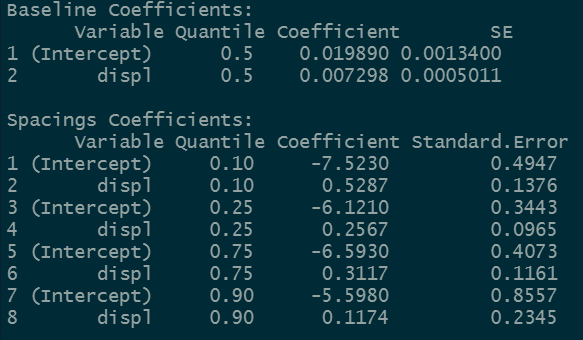
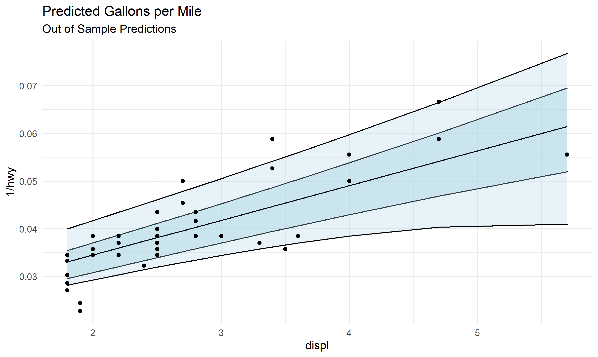
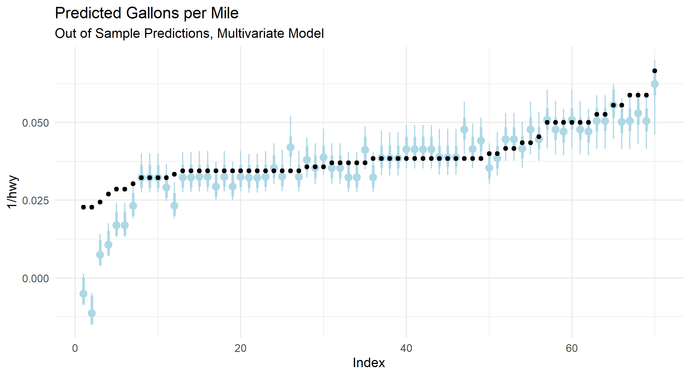
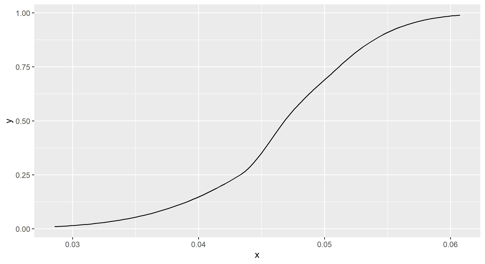

This is an R package for estimating quantile regression coefficients via the quantile spacing method, as described in the paper Quantile Spacings: A Simple Method for the Joint Estimation of Multiple Quantiles Without Crossing, Schmidt & Zhu.
The package contains utilities for estimating quantiles via the difference from a central estimated quantile. Fitted quantiles are guaranteed to be positive, because instead of directly estimating each quantile, the package will estimate the quantile effect on the log of the residuals with the correct corresponding sign.
In other words, imagine we estimate the median quantile for the data. Now we are interested in the 75th percentile. But we don’t want our quantiles to cross, which they are guaranteed to do in a non-trivial linear model (just expand the line far enough–if the lines aren’t parallel, they will cross). What do we do? We take the log of the residuals relative to the median, and estimate a quantile regression on that quantity. The exponential model guarantees that the fitted quantile will have a positive difference vs. the median. You can translate the spacing back to a fitted quantile by taking the implied predicted_spacing = log(75% - median) by running median + exp(predicted_spacing). The effects on each quantile are non-linear, but it avoids the crossing problem.
Once we have a fitted model, the package also contains utilities for interpolating the density implied by the fitted quantiles. It does this with two steps–first it takes the highest and lowest fitted quantiles (0.95 and 0.05 by default) and uses a parametric assumption to fit the tails (gaussian by default). Then it uses cubic splines to interpolate the fitted quantiles, giving a continuous predictive distribution.
Standard errors are estimated via the weighted bootstrap, where the data is randomly re-weighted according to an exponential distribution with rate parameter 1. There are also closed-form approximate standard errors through the delta method, though this is still on the roadmap and is not integrated into the package. There is also support for clustered standard errors via clustered subsampling. This is technically available through the formula interface, but the interface for this functionality is guaranteed to change in the near future.
Installation
You’ll need R installed on your computer run the package. To install, the easiest method is to run
remotes::install_github("be-green/quantspace")which requires the remotes package.
Basic Usage
Say we want to run a quantile regression. The easiest way to do this is to use the qs function.
library(quantspace)
data(mpg)
est <- qs(1/hwy ~ displ,
data = head(mpg, 190))If we print our estimate, we’ll see the baseline coefficients (in this case the median is chosen as the central quantile), and then the spacings coefficients.

Suppose we want to see how good our fit is? We might want out of sample predictive tests. To do this, we simply run
oos_pred <- predict(est, newdata = tail(mpg, 70))Let’s plot some of this stuff to see how it looks!
library(ggplot2)
plot_data <- data.frame(tail(mpg, 70),
oos_pred)
ggplot(plot_data,
aes(x = displ, y = 1/hwy, ymin = `0.25`, ymax = `0.75`)) +
geom_ribbon(fill = "lightblue", alpha = 0.5, color = "black") +
geom_ribbon(aes(ymin = `0.1`, ymax = `0.9`),
fill = "lightblue", alpha = 0.3, color = "black") +
geom_point() +
geom_line(aes(y = `0.5`), color = "black") +
theme_minimal() +
ggtitle("Predicted Gallons per Mile",
subtitle = "Out of Sample Predictions")
Let’s try a multivariate model, with multiple X variables. To make the predictions easier to see, I’m going to sort the true values, and plot our predicted quantiles as point-ranges, with the fatter range representing the 50% interval, and the thin one representing the 80% interval.
est <- qs(1/hwy ~ displ + cty,
data = head(mpg, 190))
oos_pred <- predict(est, newdata = tail(mpg, 70))
plot_data <- data.table(tail(mpg, 70),
oos_pred)
setorder(plot_data, -hwy)
plot_data[,Index := .I]
ggplot(plot_data,
aes(x = Index, y = 1/hwy, ymin = `0.25`, ymax = `0.75`)) +
geom_pointrange(aes(y = `0.5`), color = "lightblue", size = 1.1,
fatten = 1) +
geom_pointrange(aes(y = `0.5`, ymin = `0.1`, ymax = `0.9`),
color = "lightblue") +
geom_point() +
theme_minimal() +
ggtitle("Predicted Gallons per Mile",
subtitle = "Out of Sample Predictions, Multivariate Model")
Looks like we are missing some aspect of the problem for the lowest gallons-per-mile of car–perhaps we need to include an additional covariate. This type of model diagnostic is helpful, since the 80% interval for the fitted quantile should contain the observed value 80% of the time. If that’s happening not-at-random, or not happening it might be time to check your model.
Distributional Effects
What if we want to interpolate the fitted quantiles? For example, a full changes-in-changes difference in difference model involves the cumulative distribution function of the treated vs. the counterfactual predicted by the control group. We can do that by interpolating the fitted distributions for each group. Or maybe you just want a full predictive density to predict with/evaluate/sample from.
Let’s start with the fitted model above. To interpolate the fitted quantiles, all you need to do is run the following.
de <- distributional_effects(est)By default this estimates the conditional distribution at the average level of the covariates, but you can specify the newdata argument, which will compute the density functions for the levels of the data you provide.
Now de is an object of class “distributional_effects” which has associated plotting methods. I think that a predict interface is going to be on the roadmap for future releases since it will be relatively easy to program.
The object itself is a list of 4 functions corresponding to the pdf, the cdf, the quantile function, and a random number generator which simulates from the fitted density. Let’s draw 100 random numbers from our fitted density.
de$r(100)That was pretty easy! We can also plot the pdf, cdf, or quantile function.
plot(de, what = "cdf")